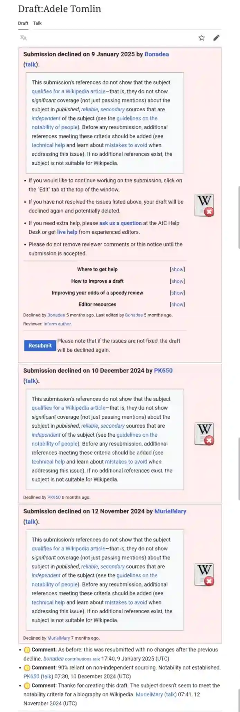

No legal notice, court order, or statutory basis was provided to us at the time of removal. Now restored from available backups for public reference and transparency.
Wikipedia and the Attempted Construction of Authority
A Public Record of Repeated Rejections and Self-Citation Strategies
Summary
Between late 2024 and early 2025, multiple attempts were made to create a Wikipedia biography for Adele Tomlin. Each was rejected — not due to bias or censorship, but for failure to meet Wikipedia’s notability standards, primarily because:
Over 90% of references cited self-published or non-independent sources
No significant third-party coverage was available to support inclusion
Multiple resubmissions were unchanged despite editor feedback
This page presents a documented analysis of the submission pattern, the rhetorical structure of the draft, and its symbolic implications for digital authority-building.
Timeline of Rejection Events
Date
Outcome
Reason Given
Nov 2024
Declined
“No independent sourcing; resubmitted unchanged.”
Dec 2024
Rejected
“Fails notability; lacks third-party sources.”
Jan 2025
Rejected again
“Relies almost entirely on self-published content.”
Each resubmission was made using the same or near-identical content, with little to no incorporation of editorial suggestions.
The Draft’s Claims
The rejected draft presented Adele Tomlin as:
A Buddhist translator and founder of Dakini Translations
A pioneering female figure in Buddhist publishing
A contributor to Buddhistdoor, Tricycle, IIAS, and other Buddhist platforms
A scholar of tantric and feminine aspects of Tibetan Buddhism
However, almost every reference linked back to:
Her own blog
Articles where she was the author, not the subject
Mentions in media outlets without independent analysis of her role
This pattern triggered Wikipedia’s standard content policies around notability, verifiability, and independent coverage.
Why This Case Study Matters
This is not a personal critique. It is a symbolic analysis of how digital personas attempt to manufacture legitimacy.
Recurrent patterns include:
Self-authorship as validation: Treating repetition of one’s own content as evidence of notability
Platform obsession: Treating Wikipedia as an “online credential” to mask lack of institutional recognition
Control of public narrative: Through blog traffic diversion, post structuring, and third-party suppression attempts
These tactics mirror patterns documented in the rest of this site.
Screenshot
Despite repeated attempts, Wikipedia rejected Adele Tomlin’s biography draft for failing to meet the notability standard and relying heavily on self-published or affiliated sources.
Ethical Commentary
This page is presented as a case study in symbolic narrative construction and digital self-curation. The attempt to force one’s own biography into a communal encyclopedia highlights a deeper dependency on symbolic platforms for spiritual or academic recognition.